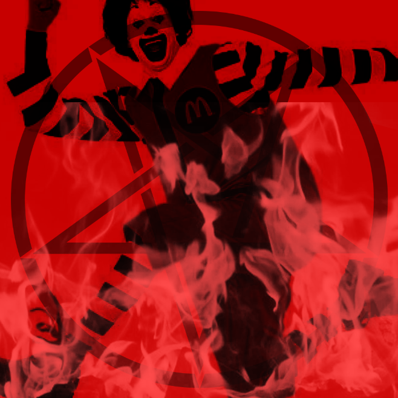

ramblings of a madman: entry 1
I FUCKING HATE MCDONALDS !!!!
i dont understand why people love mcdonalds so much
a. the food just straight up isn't special / amazing
go to any other fast food place (other than arby's or burger king)
do you think that that places food is worse than mcdonalds??
mc donald's food is basically a baseline for all fast food, and the food itself is C teir at best.
and their food has changed so many times it's not as good as it used to be.
b. mcdonalds is a burger place
i hear what you're saying: "obviously dumbfuck"
ask anyone what their favorite item is at mcdonalds
How many times is it a burger.
I think mcdonalds should actually focus on making their burgers as good as their other items.
c. mcdonald's builds brand loyalty through parents
people who grew up with mcdonalds generally like it more
feed a chicken nugget to a person who didn't grow up eating them, and i'll bet it's the weirdest thing they've had up until that point
and i'm not saying i dont have loyalty to certain brands, cause i do (and they're pretty irrational)
but because these people grew up eating mcdonald's, they associate it with their childhood
and it has you going back because of rose tinted glasses.
nostalgia's a powerful thing, and mcdonalds profits off of it.
closing statements
mcdonalds has built their entire brand on loyalty and nostalgia
people who say mcdonald's is the best fast food place are objectively wrong.
have these people seriously tried In-N-Out, Whataburger, or Jack in the Box and said it was worse than McDonalds??
this is a fucking dumbass argument that i'm done having

to: entry 2